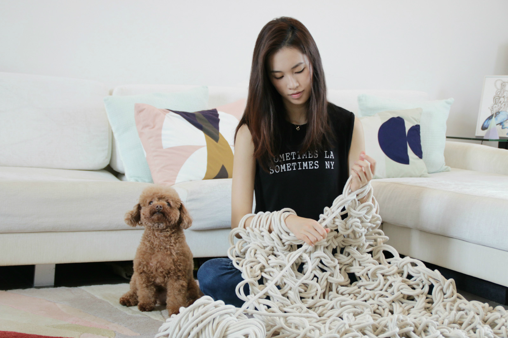
Crochet · Knit · Installation
Made by hand,
in chunky yarn.
The Mint Box Studio is where Annie Wong knits and crochets — for shop windows, mall atriums, brand campaigns, and the people who come to her classes. Hong Kong, since 2017.
Window installations the height of a shop front. Mandarin oranges the size of an armchair. A sneaker bigger than a person. Pieces you can wear, and pieces you'll only ever see in a mall atrium for a few weeks of the year.
Selected work
Installations and campaigns from the studio.
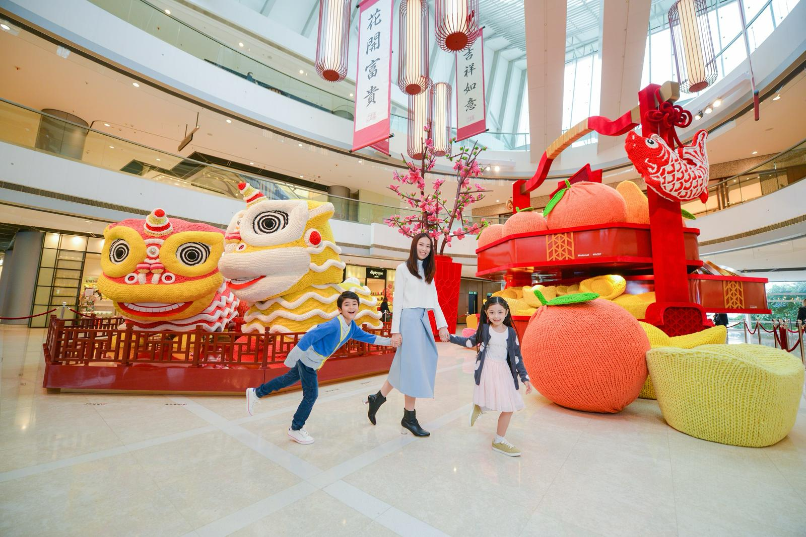
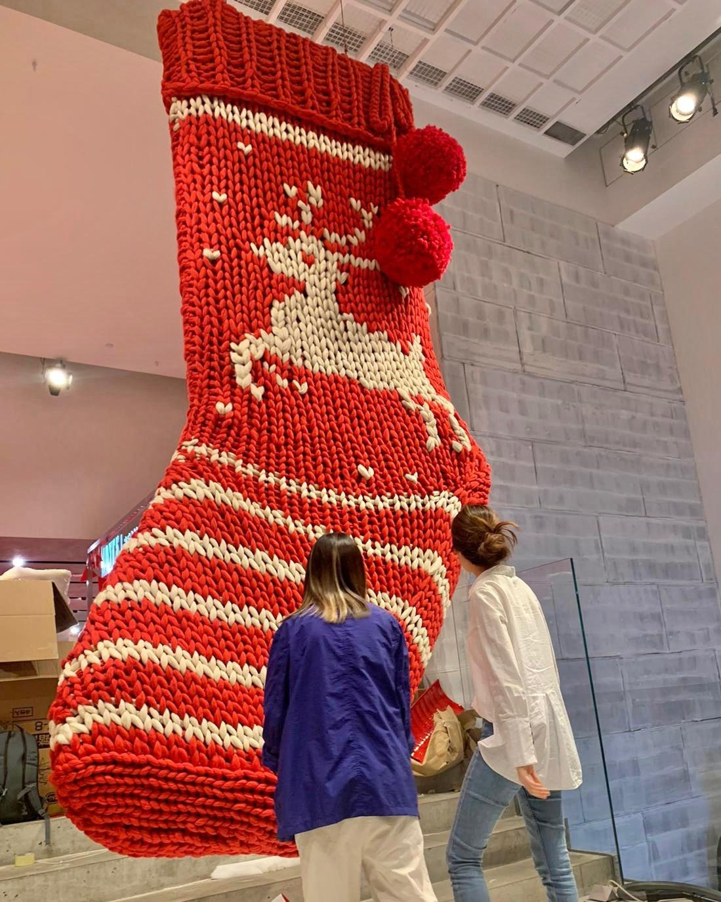
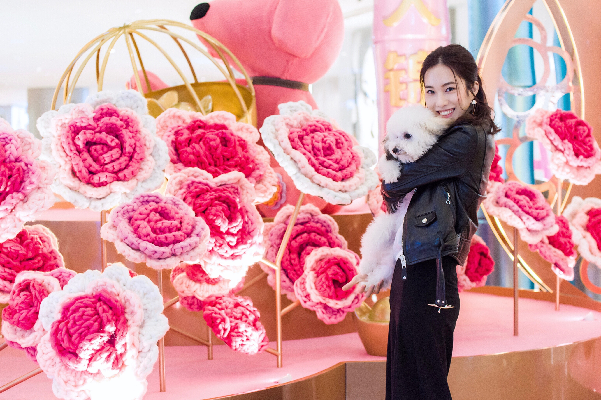
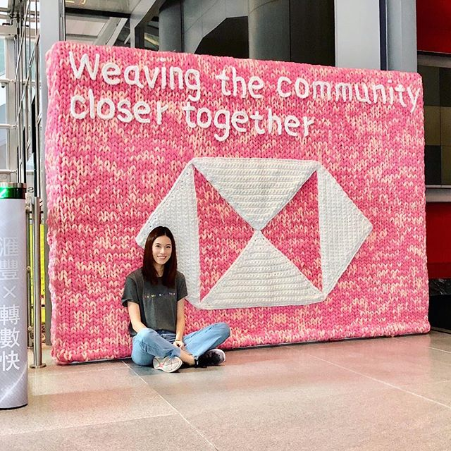
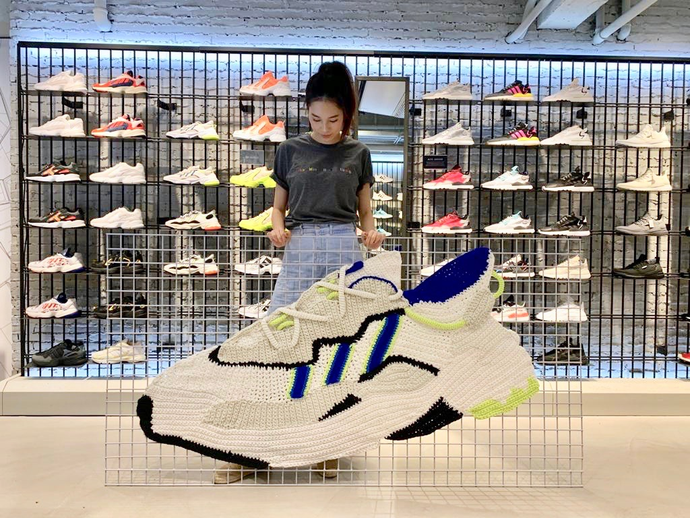
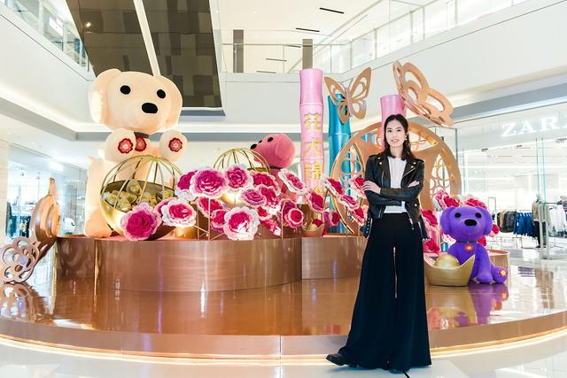
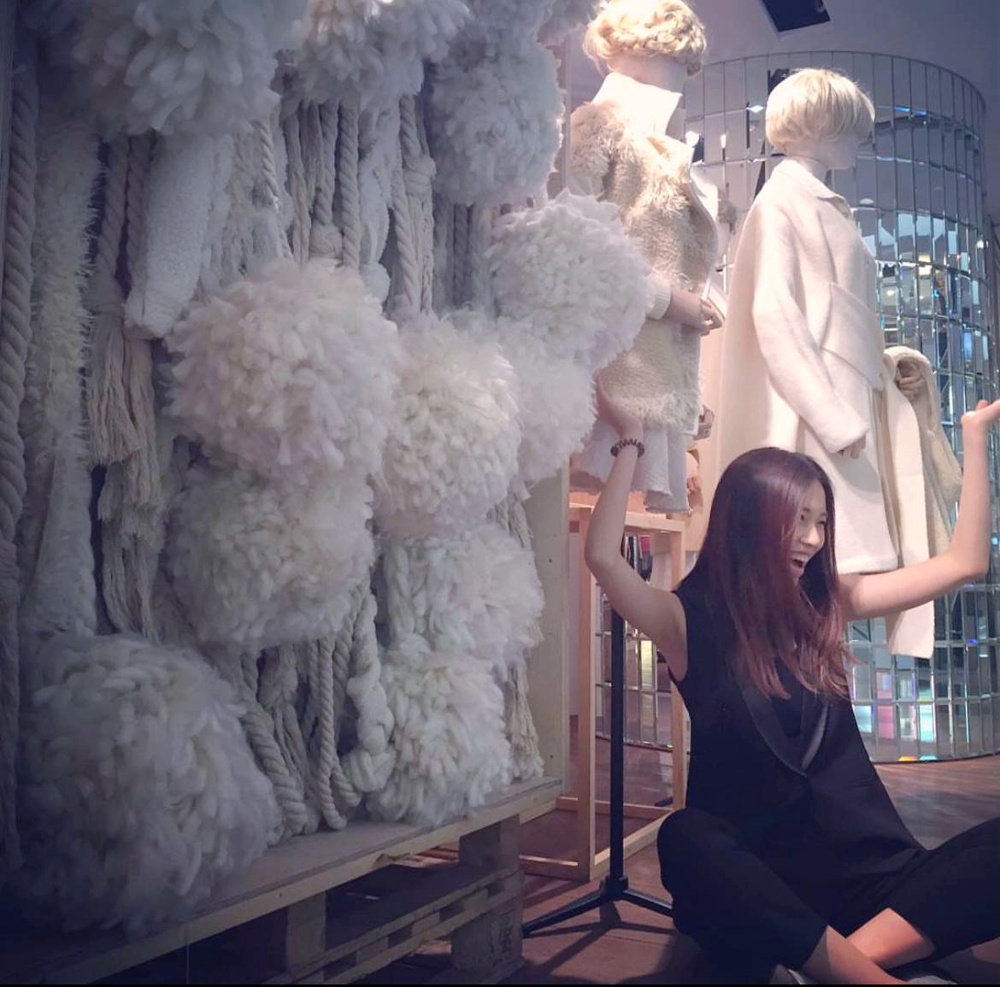
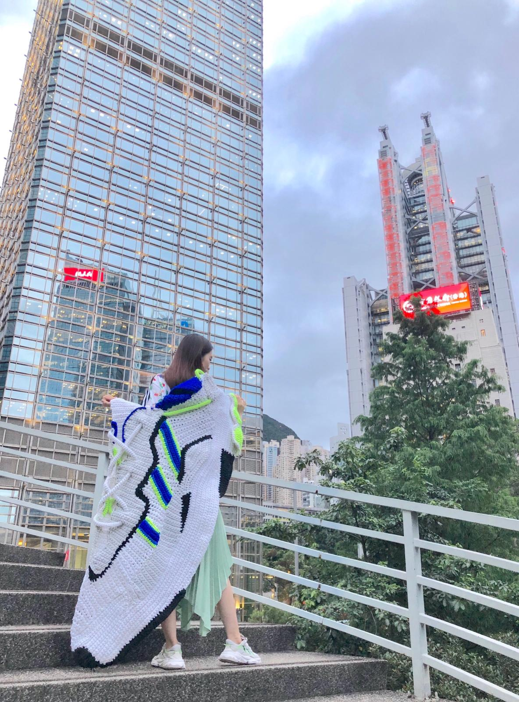
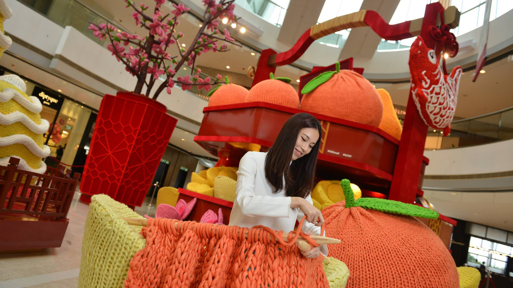
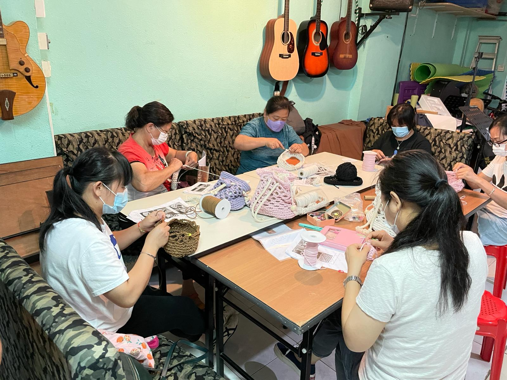
Learn to crochet at the studio
Annie has taught more than three thousand people. Group classes, private lessons, and team-builds, run out of the studio in Central. Bring nothing — you'll leave with something you made.
- Beginner crochet — half-day
- Knitting basics — half-day
- Private and corporate sessions — by arrangement
Booking and payment go through themintboxstudio.com.
Worked with
- Loro Piana
- Ralph Lauren
- Adidas
- HSBC
- IFC Mall
- Laforet
- ISF · Chongqing
- I.T
- Joyce
- J Life Foundation
- Henderson Club
About Annie
Annie Wong studied Textile Design at Central Saint Martins in London, then spent years dressing windows for an international luxury house — sneaking knit and crochet into the displays whenever she could.
She started The Mint Box Studio in 2017. The work has gone in two directions since: large knit and crochet pieces commissioned by malls, brands and shops, and a quieter teaching practice that has now reached more than three thousand students. She still does both, every week, from a small studio in Central.
Get in touch
For installations, commissions, press, and group bookings.
Visit
Studio in Central
Hong Kong Island
Elsewhere
- themintboxstudio.com — shop, gift cards, full class list
- Instagram — @themintboxstudio